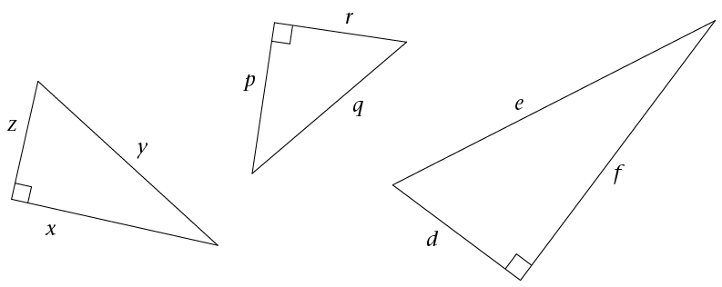

Die stelling van pythagoras
Reghoekige driehoeke het ‘n eienskap wat nie op ander soorte driehoeke van toepassing is nie. In hierdie hoofstuk gaan jy die eienskap, wat bekend staan as die stelling van Pythagoras, ondersoek. ‘n Stelling is ‘n bewering wat deur beredenering as waar bewys is. As jy eers hierdie stelling verstaan, gaan jy oefen om dit op verskeie maniere toe te pas.
Die lengtes van die sye van reghoekige driehoeke
Wat onthou jy van driehoeke?

As die hoekpunte van ‘n driehoek A, B en C gemerk is, word die teenoorstaande sye dikwels as en gemerk, soos getoon in die diagramme hier bo.
Ons gebruik die woord skuinssy vir die sy teenoor die 90° hoek van ‘n reghoekige driehoek. Die skuinssy is altyd die langste sy van ‘n reghoekige driehoek. ‘n Driehoek sonder ‘n regte hoek het nie ‘n skuinssy nie.
Ondersoek die verband tussen die lengtes van die sye
1. Bestudeer die vier figure hier onder. Elke driehoek in die vier figure het ‘n vierkant op elkeen van sy sye. Dus, in figuur (a) is a= 3 eenhede, b = 4 eenhede en c = 5 eenhede lank .
(a)

(b)

(c)

(d)

2. Verwys na die vier figure in vraag 1 om die onderstaande tabel te voltooi.
|
Figuur |
Soort driehoek |
Lengte of sy \({a}\) |
Lengte of sy \({b}\) |
Lengte of sy \({c}\) |
\({ a^2 } \) |
\({ b^2 } \) |
\({ c^2 } \) |
|
(a) |
|||||||
|
(b) |
|||||||
|
(c) |
|||||||
|
(d) |
3. Kyk na die voltooide tabel en voeg = , > of < in by die volgende stellings.
\(a^2 + b^2 ☐c^2\) as \( \triangle ABC\) ‘n skerphoekige driehoek is.
\(a^2 + b^2 ☐c^2\) as \( \triangle ABC\) ‘n stomphoekige driehoek is.
\(a^2 + b^2 ☐c^2\) as \( \triangle ABC\) ‘n reghoekige driehoek is.
4. Watter van die bewerings hier onder is korrek?
A. In enige reghoekige driehoek, is die oppervlakte van die vierkant op die skuinssy gelyk aan die som van die oppervlaktes van die vierkante op die ander twee sye.
B. As ‘n driehoek skerphoekig is, is die kwadraat van die lengte van die langste sy gelyk aan die som van die kwadrate van die lengtes van die ander twee sye.
C. As ‘n driehoek reghoekig is, is die kwadraat van die lengte van die skuinssy gelyk aan die som van die kwadrate van die lengtes van die ander twee sye.
D. In enige stomphoekige driehoek, is die oppervlakte van die vierkant op die langste sy gelyk aan die som van die oppervlaktes van die vierkante op die ander twee sye.
5. Die volgende tabel gee die sylengtes a, b en c van 10 driehoeke. Voltooi die tabel om te bepaal watter soort driehoeke elkeen is (skerphoekig, stomphoekig of reghoekig).
|
a |
b |
c |
\({\bf a^2 +b^2 } \) |
\({\bf c^2 } \) |
Vul in =, < or > |
Soort driehoek |
|
7 |
8 |
10 |
\(7^2 + 8^2 = 113\) |
\(10^2 = 100\) |
\(a^2 + b^2 > c^2\) |
Skerphoekig |
|
4 |
5 |
8 |
\(4^2 + 5^2 = 41\) |
\(8^2 = 64\) |
\(a^2 + b^2 < c^2\) |
Stomphoekig |
|
6 |
8 |
10 |
\(6^2 + 8^2 = 100\) |
\(a^2 + b^2 =c^2\) |
Reghoekig |
|
|
8 |
13 |
17 |
\(a^2 + b^2 ☐c^2\) |
|||
|
3 |
4 |
5 |
\(a^2 + b^2 ☐c^2\) |
|||
|
5 |
6 |
7 |
\(a^2 + b^2 ☐c^2\) |
|||
|
5 |
12 |
13 |
\(a^2 + b^2 ☐c^2\) |
|||
|
15 |
8 |
17 |
\(a^2 + b^2 ☐c^2\) |
|||
|
11 |
60 |
61 |
\(a^2 + b^2 ☐c^2\) |
|||
|
12 |
35 |
37 |
\(a^2 + b^2 ☐c^2\) |
6. Twee stukke hout, een rooi en een blou, is lossies aan die een kant vasgemaak. Die twee los kante is met ‘n veer verbind.
Die hoek tussen die twee houtstawe kan verander word

Beskryf hoe hierdie hoek die lengte van die veer beïnvloed
Werk met die stelling van pythagoras
Die spesiale verband tussen die lengtes van die syevan ‘n reghoekige driehoek staan bekend as die stelling van Pythagoras. Dit kan in terme van oppervlakte as volg gestel word:
As ‘n driehoek ‘n regte hoek bevat, is die oppervlakte van die vierkant, waarvan die sy die skuinssy van die driehoek is, gelyk aan die som van die oppervlaktes van die vierkante op die ander twee sye
‘n Nota oor Pythagoras
Pythagoras het in ongeveer 500 vC geleef. Die stelling is na Pythagoras vernoem, omdat hy waarskynlik die eerste persoon was wat die stelling bewys het. Die stelling was egter bekend en gebruik in ander dele van die wêreld, soos in Egipte, 1 200 jaar voor Pythagoras se geboorte
Die verwysing na oppervlakte kan weggelaat word.
As ‘n driehoek ‘n reghoekige driehoek is, dan is die kwadraat van die lengte van die skuinssy gelyk aan die som van die kwadrate van die lengtes van die ander twee sye.
Ons kan die verband tussen die lengtes van die sye van ‘n driehoek deur middel van die vergelyking \(c^2 = a^2 + b^2\) uitdruk, waar \(c\) die lengte van die skuinssy verteenwoordig en \(a\) en \(b\) die lengtes van die ander twee sye.

Werk met die formule
1. Skryf ‘n "Pythagoras-vergelyking" vir elk van die volgende driehoeke. Verduidelik wat elke lettersimbool verteenwoordig.

2. Bestudeer die voorbeeld hier onder
|
Voorbeeld Beskou die driehoek hier onder. Sy \(a\) is 3 eenhede lank en sy \(b\) is 4 eenhede lank. Wat is die lengte van sy \(c\)? |
|
|
Indien sy \(a\) is 3 eenhede lank en sy \(b\) is 4 eenhede lank, dan sal volgens Pythagoras se stelling: \(\begin{align} c^2 &= a^2 + b^2 \\ c^2 &= 3^2 + 4^2 \\ c^2 &= 9 + 16\\ c^2 &= 25 \\ \sqrt{c^2} &= \sqrt{25} \\ c &= 5 \text{ eenhede}\end{align}\) |
|
3. Die oppervlaktes van sommige van die vierkante hier onder word gegee. Bereken die ontbrekende oppervlaktes van die vierkante, sowel as die lengtes van al die sye.
(a)

(b)

4. Die tabel hier onder verskaf inligting omtrent die sye van vyf reghoekige driehoeke. Die lettersimbool \(c\) verteenwoordig die lengte van die skuinssy in al die gevalle. Gebruik Pythagoras se stelling om die tabel te voltooi en laat die antwoorde in wortelvorm indien nodig

|
a |
b |
c |
\({\bf a^2}\) |
\({\bf b^2}\) |
\({\bf a^2 +b^2 } \) |
\({\bf c^2 } \) |
|
7 |
24 |
|||||
|
16 |
34 |
|||||
|
10 |
576 |
|||||
16 |
49 |
|||||
|
1 |
1 |
Bepaal ontbrekende sylengtes in reghoekige driehoeke
Ons kan die stelling van Pythagoras gebruik om die lengte van die derde sy van ‘n reghoekige driehoek te bereken as ons die lengtes van die twee ander sye ken.
|
Voorbeeld 1 In ‘n reghoekige driehoek is sy \(a = 6\) eenhede en sy \(b = 8\) eenhede. Bereken die lengte van die skuinssy \(c\). \(\begin{align} c^2 &= a^2 + b^2 \\ &= 6^2 + 8^2 \\ &= 36 + 64\\ &= 100 \\ \sqrt{c^2} &= \sqrt{100} \\ c&= 10 \\ ∴c &= 10 \text{ eenhede}\end{align}\) |
|
Voorbeeld 2 In ‘n reghoekige driehoek is sy \(a = 5\) eenhede en sy \(b = 3\) eenhede. Bereken die lengte van die skuinssy \(c\). \(\begin{align} c^2 &= a^2 + b^2 \\ &= 5^2 + 3^2 \\ &= 25 + 9\\ &= 34 \\ \sqrt{c^2} &= \sqrt{34} \\ c&= \sqrt{34} \text{ (laat in wortelvorm)} \\ ∴c &= \sqrt{34} \text{ eenhede}\end{align}\) |
Bereken die lengte van die skuinssy
Gebruik die formule vir die stelling van Pythagoras om die lengte van die skuinssy te bereken. Laat jou antwoorde in wortelvorm indien nodig.
1.2.
3.

4.

5. ‘n Reghoekige driehoek met reghoeksye met die volgende lengtes:
\(a\) = 9 cm, \(b\) = 40 cm.
Bereken die ontbrekende sylengte in 'n reghoekige driehoek
Bereken die ontbrekende sylengtes van die volgende driehoeke. Moenie ‘n sakrekenaar gebruik nie en laat die antwoorde in die eenvoudigste wortelvorm waar nodig.
1.

2.

3.

4.

5.

Is die driehoeke reghoekig of nie?
Jy het in afdeling 3.1 en 3.2 geleer dat in ‘n reghoekige driehoek, die oppervlakte van die vierkant op die skuinssy gelyk is aan die som van die oppervlaktes van die vierkante op die ander twee sye.
Hoe weet ons of ‘n driehoek ‘n reghoekige driehoek is as die lengtes van die sye gegee word? Een manier is om die "omgekeerde" van die stelling van Pythagoras te gebruik.
Die omgekeerde stel dit dat as die som van die kwadrate van twee sye gelyk is aan die kwadraat van die langste sy, dan is die driehoek reghoekig.
‘n Omgekeerde is ‘n stelling wat dít wat in ‘n stelling gegee is, omruil met dit wat bewys moet word.
Ons kan die omgekeerde ook as volg stel:
As ‘n driehoek met sylengtes \(a\), \(b\) en \(c\) sodanig is dat \(c^2 = a^2 + b^2\), dan is die driehoek reghoekig.
In die vrae wat volg, moet jy bepaal of die driehoeke reghoekig is of nie. Bestudeer eers die voorbeeld.
|
Voorbeeld: Bepaal of die driehoek reghoekig is of nie. \(\text{(Langste sy se lengte)}^2 = (15)^2 = 225 \\ \text{Som van die kwadrate van die twee ander sye se lengtes} \\ = 9^2 + 12^2 \\ = 81 + 144 \\ = 225 \\ \text{(Langste sy)}^2 = \text{Som van die kwadrate van die ander twee sylengtes} \\ 15^2 = 9^2 + 12^2 \\ ∴ \text{Die driehoek is reghoekig}.\) |
Reghoekig of nie ?
Bepaal of die driehoeke reghoekig is of nie.
1.

2.

3. ‘n Driehoek het sye met lengtes 6, 9 en 15 eenhede.
4. Watter van die volgende sylengtes van ‘n driehoek sal ‘n reghoekige driehoek vorm? Antwoord sonder om enige berekeninge te doen en verduidelik jou antwoord.
(a) 4, 2, 2
(b) 6, 8, 10
(c) 9, 12, 15
(d) 3, 4, 6
(e) \(3x\), \(4x\), \(5x\)
(f) 30, 40, 50